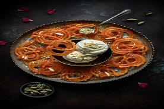
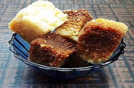
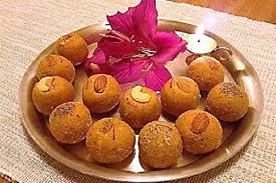

Rasgulla
Ingredients of Rasgulla
- 2 litre milk,1 1/2 cup sugar
- teaspoon rose water,3 tablespoon lime juice,3 cup water
- teaspoon rose water,3 tablespoon lime juice,3 cup water
process
- Never refrigerate the chhena or the rasgullas will become rubbery.
- Always use full-cream milk for making rasgullas.
- You can skip adding maida. If you keep the flame low, rasgulla will not disintegrate.
- The colour of rasgulla also depends on the type of milk.
- Overboiling rasgullas can make them shrivel down

Kajukatli Mithai
Ingredients of Kajukatli
- 1 cup Cashew Nuts (Kaju)
- 1/2 cup Sugar
- 1/4 teaspoon Cardamom Powder
- 1/4 cup Water
- Ghee, for greasing
process
- If you are using frozen/cold cashew nuts, bring them to room temperature before grinding.
- Add sugar and water in a pan and cook it over medium flame
- Stir continuously and cook until sugar dissolves completely.
- Reduce heat/flame to low and add cashew nut powder and cardamom powder.
- Stir with spatula and mix properly.
- Cook and mix continuously until mixture thickens and turns into a big single lump

Jalebi
Ingredients of Jalebi
- 3 cup all purpose flour,2 cup hung curd
- 1/2 cup ghee,3 cup sugar
- 1/2 cup corn flour,1 1/2 pinch baking soda
- 2 cup sunflower oil,3 cup water
- 4 drops rose essence,1/2 teaspoon edible food color
process
- Prepare the Jalebi batter and let it ferment overnight
- Deep fry the Jalebis
- Soak the Jalebis in sugar syrup and serve
- For Instant Jalebis, mix together all-purpose flour, corn flour, and a little turmeric.

Milk cake
Ingredients of Milk cake
- 1 litre milk
- 1 tablespoon ghee
- 3 teaspoon lemon juice
- 1/2 cup sugar
process
- Simmer the milk until it reduces to one-third of its quantity
- Let the milk turn grainy
- Let the Milk Cake set before cutting into squares
- For the best colour of your Milk Cake, add the grainy mixture in an aluminium container.
- Always use full cream milk or cow milk for a tastier Milk Cake.

Besan Laddu
Ingredients of Laddu
- ½ cup ghee / clarified butter
- 2 cup besan / gram flour, coarse
- 1 cup sugar
- 4 pods cardamom / elachi
- 2 tbsp melon seeds
- 2 tbsp cashew / kaju, chopped
process
- firstly, in a large kadai heat ½ cup ghee and add 2 cup besan.
- continue to roast on low flame. if the mixture turns dry, add a tbsp of more ghee.
- after 20 minutes, the besan starts to release ghee.
- transfer the mixture to a large bowl, allowing to cool slightly.
- take 1 cup sugar and 4 pods cardamom in a blender.
- once the besan is cooled (slightly warm) add in powdered sugar.